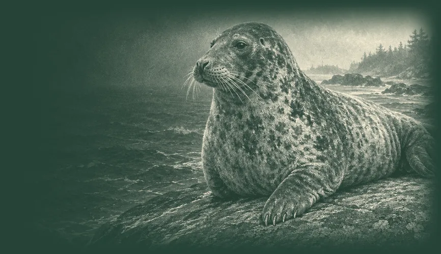

Nature atlas
Explore the atlas
Lietuvos atlasas
Explore the Baltic Sea, Lithuania’s coast, and the Curonian Lagoon through stories and maps.
A home for the things I build on the web. Pick a project below to try it.